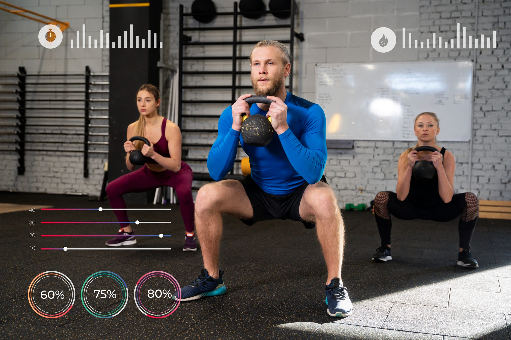

Кардио vs Силовые тренировки: Что эффективнее для похудения?
Путь к снижению веса часто сопровождается выбором между двумя основными типами физической активности: кардиотренировками (аэробными упражнениями) и силовыми тренировками. Оба вида имеют свои уникальные преимущества, но какой из них более эффективен для похудения? Давайте разберемся.
Кардиотренировки
Преимущества:
- Быстрое сжигание калорий. Кардионагрузки, такие как бег, плавание, езда на велосипеде или занятия на эллипсоиде, помогают сжигать калории прямо во время тренировки. Чем интенсивнее тренировка, тем больше энергии вы тратите.
- Улучшение работы сердечно-сосудистой системы. Регулярные кардиотренировки укрепляют сердце и легкие, снижают риск развития гипертонии, инсульта и других заболеваний сердца.
- Повышенное настроение. Аэробные нагрузки способствуют выработке эндорфинов – гормонов счастья, которые улучшают эмоциональное состояние и помогают бороться со стрессом.
- Доступность. Для большинства видов кардио не требуется специального оборудования; достаточно просто выйти на пробежку или заняться быстрой ходьбой.
Недостатки:
- Потеря мышечной массы. При длительных кардиосессиях организм может начать использовать мышечную ткань в качестве источника энергии, особенно если у вас дефицит калорий.
- Риск травм. Высокий уровень ударной нагрузки при беге или прыжках может привести к проблемам с суставами, особенно коленными.
- Снижение мотивации. Длительные однообразные тренировки могут стать скучными и снизить мотивацию заниматься спортом.
Силовые тренировки
Преимущества:
- Укрепление мышц. Силовые тренировки, включающие работу с весами, гантелями или собственным весом, помогают наращивать и поддерживать мышечную массу. Мышцы требуют большего количества энергии даже в состоянии покоя, поэтому чем больше у вас мышц, тем выше ваш базовый метаболизм.
- Долгосрочное сжигание жира. После силовой тренировки организм продолжает сжигать калории еще несколько часов благодаря эффекту "дожигания" (EPOC). Это происходит за счет восстановления мышц после нагрузки.
- Поддержка костной ткани. Силовые упражнения стимулируют рост костей, снижая риск остеопороза, особенно у женщин.
- Коррекция фигуры. Благодаря увеличению мышечной массы тело становится подтянутым и рельефным, а фигура приобретает гармоничный вид.
Недостатки:
- Медленное сжигание калорий во время тренировки. В отличие от кардио, силовые тренировки не обеспечивают такого быстрого расхода калорий непосредственно во время занятий.
- Необходимость оборудования. Для эффективных силовых тренировок обычно требуется доступ к тренажерному залу или хотя бы набору гантелей и штанг дома.
- Высокий риск травм. Неправильная техника выполнения упражнений может привести к растяжениям, вывихам и другим повреждениям.
Сочетание кардио и силовых тренировок
Для максимального эффекта в снижении веса рекомендуется комбинировать оба типа тренировок. Вот несколько советов по созданию сбалансированного плана:
- Чередование дней. Например, три дня в неделю занимайтесь кардио, а два – силовыми тренировками. Такой подход позволит вам поддерживать высокий уровень метаболизма и одновременно работать над увеличением мышечной массы.
- Интервальные тренировки. Включайте элементы высокоинтенсивных интервальных тренировок (HIIT), где чередуются короткие периоды высокой интенсивности с периодами отдыха. Это позволяет сжигать больше калорий за меньшее время и поддерживать высокую интенсивность обмена веществ.
- Разнообразие. Меняйте виды кардио и силовых нагрузок каждую неделю, чтобы избежать скуки и дать организму новые стимулы для роста и адаптации.
- Правильное питание. Независимо от того, какие тренировки вы выбираете, важно следить за своим питанием. Сбалансированный рацион с достаточным количеством белков, углеводов и жиров поможет достичь лучших результатов.
Заключение
В конечном итоге, ни одна форма тренировок сама по себе не является панацеей для похудения. Оптимальный результат достигается через сочетание кардио и силовых нагрузок, правильное питание и здоровый образ жизни. Важно найти баланс, который подходит именно вам, учитывая ваши цели, физические возможности и предпочтения.